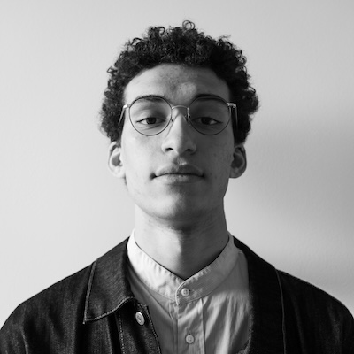

I am a junior studying Civil Engineering and Architecture at
Cornell University, and I hope to be a motivating force in the
creation of sustainable, humanitarian architecture that utilizes
environmentally conscious construction methods and passive
climate systems in actively-developing and redeveloping regions
around the world. I believe that this form of architecture is
crucial in addressing humanitarian crises immediately and
effectively. Furthermore, creating these solutions using
minimally exported materials and climate-responsive passive
systems will ensure the security of these regions far into the
future. Across my studies, I have addressed these interests by
learning about the structural and societal motivations behind
the construction of infrastructure and housing,
climate-responsive design, and historic reconstruction efforts.
My current projects center around climate modeling and
adaptation in American cities, and I hope to expand that
understanding to more diverse climates.
Email
Cornell University, Civil Engineering Major, Architecture Minor
— August 2022 - May 2026
Awards: 3.946 GPA, 5x Dean's List, Aizen Climate Research Fund,
CUEmpower Peer Protégé Award Recipient
Societies: LSAMP Scholar, Simmons Scholar
Columbia University Graduate School of Architecture, Planning,
and Preservation, Introduction to Architecture Program — July
2024 - August 2024
Pratt Institute, Summer Architecture Intensive — June 2024 -
July 2024
Hong Kong University of Science and Technology, International
Summer Exchange Program — June 2023 - August 2023
Studio: Photography Collective, President and Co-Founder — April
2024 - Present
Directs a rigorous and rewarding studio environment to develop
independent photographers’ technical and narrative skills
through workshops and lectures
Establishes relationships with faculty and professionals to host
lectures and conduct review sessions with students
Designs and publishes a print magazine to share the work of all
club members to the greater Cornell community
Cornell Fashion Collective, Director of Photography — September
2022 - May 2024
Developed creative directing skills in editorial photography by
shooting and directing photoshoots for runway shows, social
media, and website
Mentored newer photographers by teaching technical and
compositional skills, and assisted them in directing their own
shoots
Cornell Chapter of Engineers Without Borders, Business Subteam
Co-lead — October 2022 - January 2024
Garnered donations and recruits by directing, filming, and
editing informational videos for team website and Instagram
Incorporated accessible design by creating curriculums to engage
elementary and middle school students with engineering in a
digestible manner
Qi Li Group, Independent Researcher — August 2024 - Present
Currently creating a navigation application that routes New York
City cyclists along heavily shaded routes in order to increase
awareness of transportation inequalities and mitigate urban heat
island effects on vulnerable commuters
Utilizes QGIS to create a shade model of NYC, merging bike
route, street, building footprint, and tree canopy datasets
Will subsequently use Python to create a navigation algorithm
that prefers shaded routes and Swift to create a mobile
application
Cornell University College of Human Ecology, Student
Photographer — March 2023 - Present
Captures academic enrichment by shooting and editing photos of
classes, events, students, and faculty
Contributes to recognition of research and faculty achievements
by working closely with faculty, speakers, and research groups
to direct shoots that showcase their work
Michael Scaduto Architect, Architectural Intern — June 2022 -
January 2024
Used AutoCAD to create to-scale floorplans, elevations, and
sections of projects using collected measurements and
documentation
Planned demolitions and visualized renovations in order to
facilitate effective remodels
Annotated drawings to contain information relevant to building
code compliance, making them accessible for a large number of
contractors
JJL Construction, Assistant Contractor — June 2021 - August 2021
Developed power tool proficiency by collaborating with a
contractor working on residential renovations throughout
Brooklyn, New York
Gained hands-on experience with renovation process through
demolishing and renovating rooftop patios, kitchens, and living
spaces